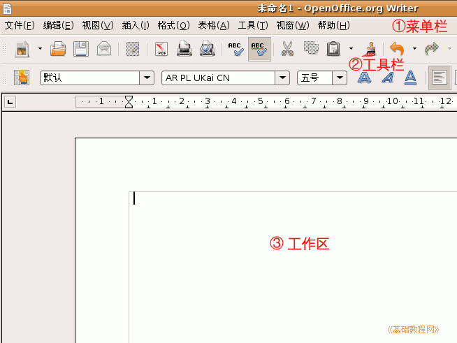
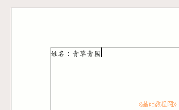
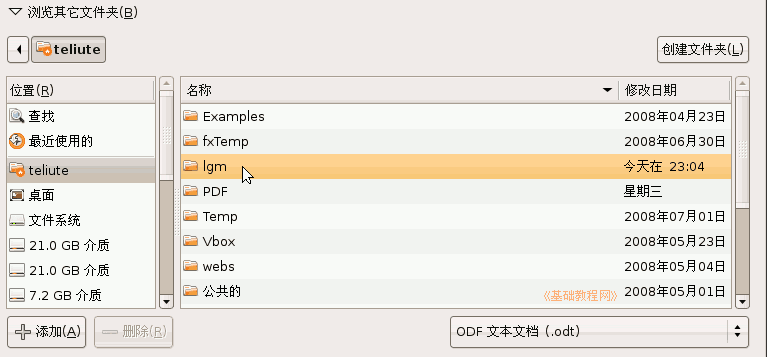
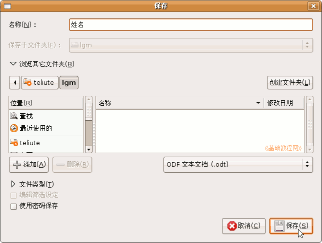
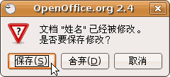

，选择汉语输入法，这儿选择的是智能拼音输入法；打开窗口；
，选择汉语输入法，这儿选择的是智能拼音输入法；打开窗口； OpenOffice.org 教程之 Writer 文字处理
作者：TeliuTe 来源：基础教程网
输入文字和保存 返回目录 下一课1、启动 Writer
1）单击屏幕左上角“所有程序－办公－OpenOffice.org 文字处理”，就可以启动Writer，也可以在桌面创建一个启动器；
2）Writer 窗口主要由菜单栏、工具栏、工作区组成，文字一般输到工作区中，有一个一闪一闪的竖线；

3）记住常用的菜单“文件”菜单、“视图”菜单和“格式”菜单，
工具栏中是一些常用的菜单命令，用图片表示，使用很方便；
2、输入文字
1）在工作区中点一下鼠标，这样就会出现一条一闪一闪的光标插入点，文字就输在它这儿；
2）点击输入法图标，选择汉语输入法，这儿选择的是智能拼音输入法；打开窗口；
3）输入自己的姓名，然后按回车键到下一行，输入班级、学校，注意观察光标插入点的位置变化，它会随着文字逐渐后退；

3、保存文件
1）点击菜单“文件－保存”命令，这是第一次保存，会出来一个“保存”对话框；
2）找到上一节建立的自己的文件夹，双击打开，在上边的文件名中，输入“姓名”，再点下边的“保存”按钮；

注意按顺序，先是上面的“名称”，中间的位置，然后点右下角的“保存”按钮；
3）这样就成功地将文件保存到了自己的文件夹中，以后每次点工具栏上的“保存”按钮，就可以自动保存；
4、退出Writer
1）点“文件”菜单中，最下面的“退出”命令，就可以退出Write程序，也可以点右上角的叉按钮，关闭窗口退出；
2）如果文件没保存，或者又修改了，这时候会出来一个提示框，红色是提醒、警告的意思；

3）如果文件是有用的，就点第一个“保存”，保存并退出，如果是没用的文件，就点第二个“舍弃”不保存退出；
我们要养成经常保存的良好习惯，经常点一下工具栏上的保存按钮；
本节学习了文字的输入和保存文件的方法，如果你成功地完成了练习，请继续学习下一课内容；
本教程由86团学校TeliuTe制作|著作权所有
基础教程网：http://teliute.org
美丽的校园……
转载和引用本站内容，请保留版权信息和本站链接。